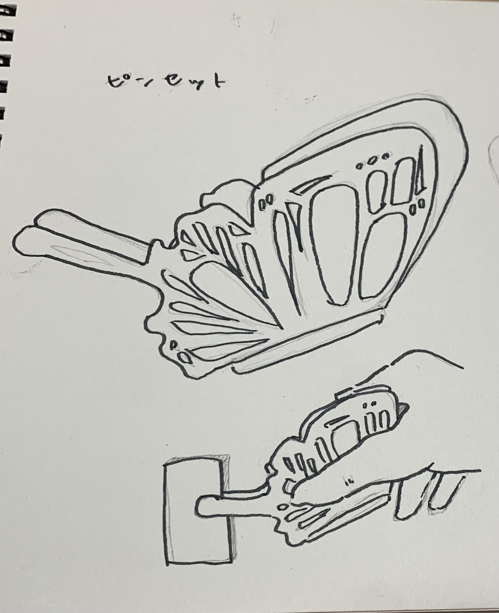
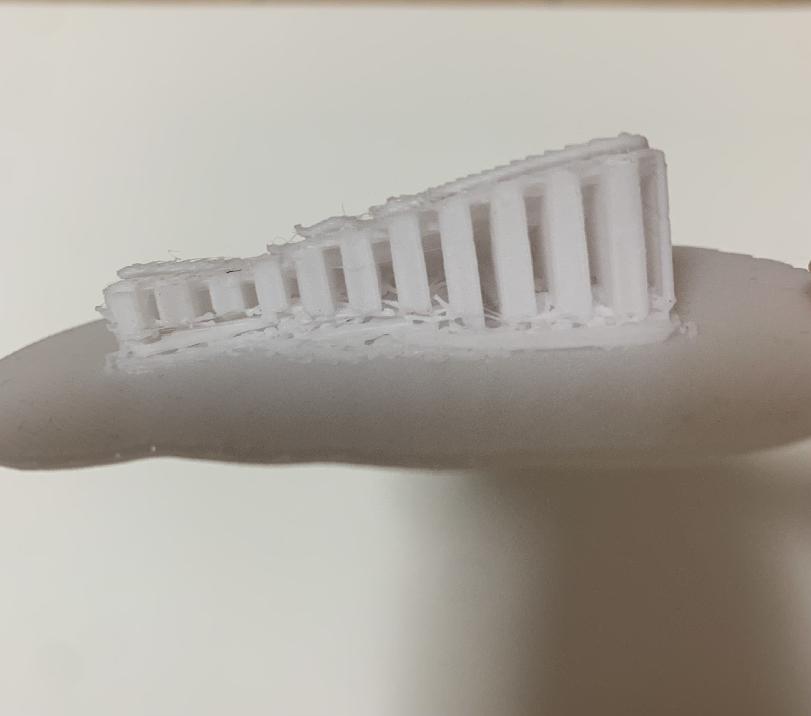
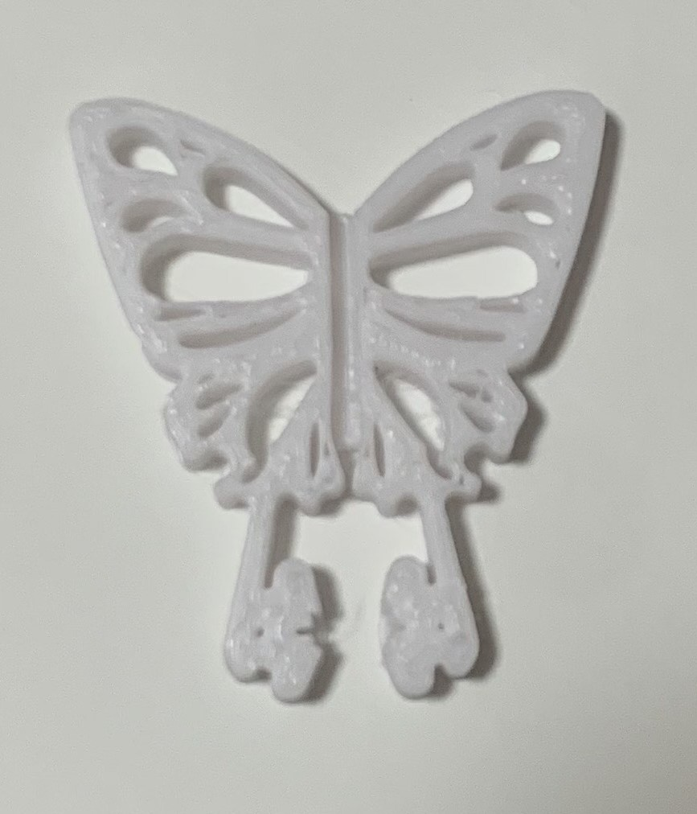

スケッチ

最初に考えていた完成形
蝶の羽のとがっているところで挟み、挟むと蝶が羽ばたいているように見えるもの
見た目がきれいなピンセット
やってみた結果
複雑なデザインでサポートが多くなってしまいきれいにいかなかった
羽の部分が思っているより薄く模様がきれいに出なかった
修正版

失敗を基にサポートがつかないように平らにし羽の模様も減らしたデザインにした
挟む部分を花びらにして合わさると花ができるようなデザインにした
結果２
花びらの部分の模様はうまく出なかったが羽のデザインをきれいに出すことができた
機能性はあまり期待できない
３Dプリンターを使ってみて
- サポートはなるべくつけないほうがいい（小さいものは特に）
- 薄さには気を付ける
- 思っているより丈夫
- 細かすぎると思っていてもミリ単位で表現可能